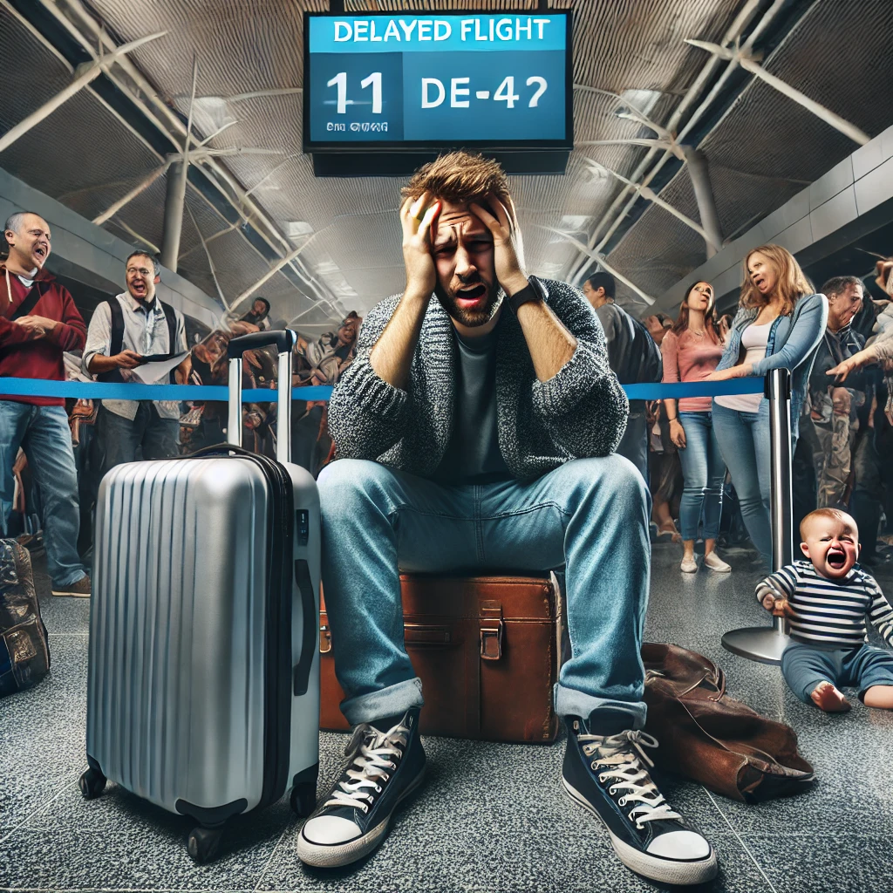
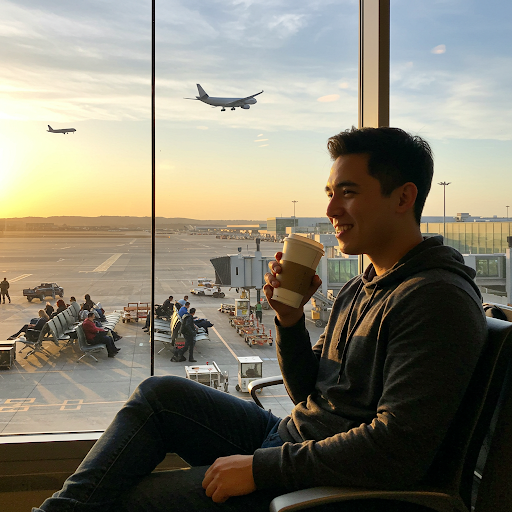

Jason hated the airport. Not in the way most people disliked the long security lines or overpriced coffee—his hatred was deep, personal, and unshakable. Every time he stepped foot inside, his chest tightened, his patience evaporated, and the walls seemed to close in on him.
It all started years ago, on what should have been a simple trip home for Christmas. His flight was scheduled for 6 PM. He arrived two hours early, just like they always told him to. But a sudden storm turned the departures board into a chaotic mess of delayed and canceled flights. One by one, his options dwindled until he found himself stuck in the terminal overnight. The floor was too hard to sleep on, the announcements were too loud to tune out, and the one power outlet he could find had already been claimed by a family charging seven different devices.
That night, he made the mistake of buying a $14 sandwich that tasted like sadness and disappointment. Worse, he was trapped near a man who wouldn’t stop loudly FaceTiming his girlfriend, detailing every boring aspect of his delay in real time. “Yeah, babe, I know, it’s crazy. Yeah, the plane is still not here. Yeah, I’m just sitting here. Yeah, the guy next to me looks mad.”
Jason was mad.
And that was just the beginning. Over the years, the airport found new ways to torment him. The TSA agent who made him take off his belt, then loudly announced that his pants were falling down. The baby that screamed non-stop for four hours at Gate B12. The guy who took his shoes off on a packed flight and propped his bare feet right next to Jason’s armrest.
But the final straw—the moment that sealed his undying hatred—was the baggage claim incident. After a grueling 12-hour travel day, he waited. And waited. And waited some more. The carousel spun, bags emerged, people left, and still… no suitcase. Finally, an airline worker shuffled over and muttered the words he dreaded: “Looks like your bag didn’t make it.”
Gone.
From that moment on, Jason swore off flying whenever possible. He took road trips. He endured 18-hour train rides. He even once considered taking a bus across the country. Anything to avoid the cold, fluorescent-lit hell that was the airport.
Because the airport didn’t care about him. The airport swallowed people whole, chewed them up, and spit them out exhausted, frustrated, and missing at least one essential item.
And Jason? He would never forgive it.
Most people saw the airport as a necessary evil—a place of long lines, overpriced coffee, and endless waiting. But not Jason. Jason loved the airport.
To him, the airport wasn’t just a place; it was an adventure waiting to happen. The moment he stepped inside, he felt a rush of excitement. The smell of fresh-baked pretzels from the food court, the hum of rolling suitcases, the flashing departure boards promising journeys to places he had never been—every detail filled him with joy.
He arrived early. Always. Not because he had to, but because he wanted to. While others groaned at the idea of a three-hour wait, Jason relished every moment. He would stroll through the terminals, people-watching and imagining their stories. Was that businessman heading to a big meeting? Was the young couple off to their honeymoon? He once saw an old man tear up as he hugged his daughter goodbye, and Jason felt honored to witness such a raw, beautiful moment of human connection.
Security was never a hassle for him. In fact, he found it oddly satisfying—the efficiency of removing his shoes, the rhythm of placing his laptop in a bin, the beep of the scanner confirming all was clear. It was a system, a dance, and Jason had perfected it.
Once past security, he treated the terminal like his personal paradise. A quick stop at his favorite café for a cinnamon latte, a leisurely browse through the bookstore where he always bought something (because what’s a trip without a new book?), and then, his favorite part—watching the planes.
Jason could sit by the giant windows for hours, watching aircraft glide down the runway, taking off into the sky. Each one was a promise, a possibility. It fascinated him how something so massive could lift into the air so effortlessly.
Delays? No problem. Extra time just meant another chance to explore. Maybe he’d check out a new restaurant or strike up a conversation with a fellow traveler. Some of his best memories were made in airports—a spontaneous lunch with a backpacker who had been to 30 countries, a deep conversation with an elderly woman who told him stories of her youth, even a chance encounter that led to a lifelong friendship.
For Jason, the airport wasn’t just a stop along the way. It was a place where anything could happen. A gateway to adventure. A reminder that the world was big, full of stories, and waiting to be explored.
And every time he boarded a plane, he already looked forward to the next time he’d be back.
